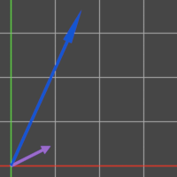
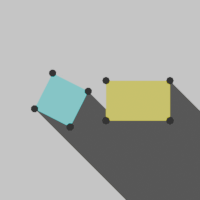

Background
A while ago I saw this video by SethBling about 3D rigidbody physics in Minecraft using the Separating Axis Theorem for collision detection, and the idea really resonated with me. After seeing this video and reading up on the concept, I used the knowledge to add proper 2D polygon colliders to a Terraria clone I had been working on at the time in order to learn C# outside the context of the Unity Game Engine. By now I've used this method in several projects, including an implementation of Asteroids for college. But, all of the projects I've done using SAT so far have been 3D, and being the massive dweeb that I am, I've always wanted to try it in 3D. What better time to try some massive new project than a month before college starts back up again?
Milestone 1: Getting literally anything to work
 Before getting into how I've implemented things, I should probably explain what the SAT acutally is. In all honesty it's pretty simple as long as you understand a few core concepts, namely the dot product of vectors. The dot product can be thought of as an operation that rotates 2 vectors such that one of them aligns with the x axis, and returns the x component of the other vector multiplied by the first vector's length. For our purposes today, we can ignore that final multiplication because we can always assume at least one of our vectors is normalized, and has a length of 1. The effect this has is that doing the dot product casts a "shadow" of  one vector onto the other, and gives us where that "shadow" lands on the x axis. The other main concept to understand is that for any 2 convex shapes that are not overlapping, there exists at least one axis onto which they can be projected and their shadows don't overlap. That one is pretty obvious if you think about it, but the important part is that we can very easily find that axis—in fact this is pretty much the entirety of the Separating Axis Theorem. It turns out that in 2D, you only need to check the axes perpendicular to each side of both objects and you're guaranteed to find the separating axis if it exists.